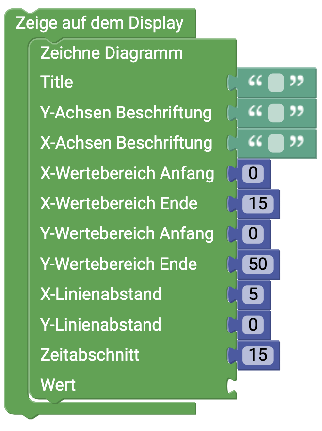

senseBox Display
Diese Seite gibt dir eine Übersicht über die verschiedenen Möglichkeiten des Displays der senseBox

Das OLED-Display
Anschluss: I2C/Wire
Das OLED-DISPLAY hat eine Auflösung von 128x64 Pixeln und wird über den I2C Anschluss angeschlossen. Um das Display zu verwenden muss es im Setup() initialisiert werden.
Anzeige auf dem Display
Dieser Block wird immer benötigt, wenn etwas auf dem Display angezeigt werden soll. In den offenen Blockabschnitt wird zum Beispiel der Block für die Anzeige von Text eingefügt.
Display löschen
Verwende diesen Block um den Inhalt des Displays zu löschen. Es empfiehlt sich am Anfang oder Ende der Endlosschleife das Display zu löschen um ein korrektes Anzeigen von z.B. Messwerten zu gewährleisten.
Anzeigen von Text
Mit diesem Block kannst du dir Text und Messwerte auf dem Display anzeigen lassen. Die Schriftfarbe ist standardmäßig auf Weiß eingestellt, da das Display einen schwarzen Hintergrund hat. Du kannst neben der Schriftfarbe auch die Schriftgröße ändern. In Schriftgröße 1 ist ein Buchstabe oder eine Zahl 8 Pixel groß und du kannst dir insgesamt in 8 Zeilen auf dem Display verschiedene Texte anzeigen lassen. In Schriftgröße 2 sind die Buchstaben oder Zahlen 16 Pixel hoch. Mit den X- und Y-Werten gibst du an wo auf dem Display etwas angezigt wird.Zeichne Punkt
Mit diesem Block kann ein Punkt auf dem Display angezeigt werden. Über die Koordinaten kannst du den Punkt auf dem Display platzieren und mithilfe des Radius die größe bestimmen.Zeichne Rechteck
Dieser Block zeichnet ein Rechteck auf das Display. Mit den X- und Y-Koordinaten wird die Position der oberen linken Ecke des Rechtecks auf dem Display bestimmt. Die Höhe und Breite wird in Pixeln angegeben und mit der Checkbox "Ausgefüllt" kann ausgewählt werden ob das Rechteck ausgefüllt oder nur als Rahmen angezeigt wird.